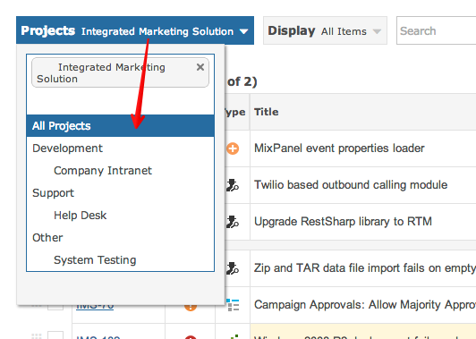
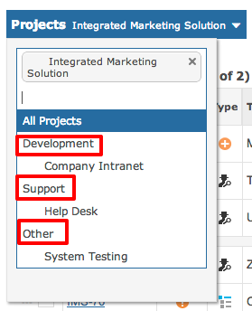
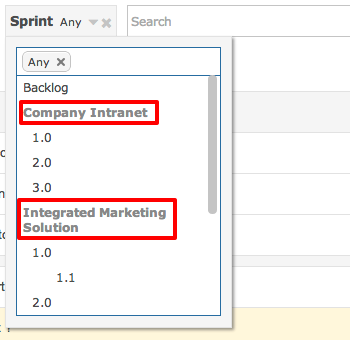

Select any project to include items from that projects.

Projects can be grouped within a category. You can select the category label as a shortcut to selecting all it's projects.

Different projects may have different processes, workflows and resources. In such circumstances the search filters will group meta-data by project.
